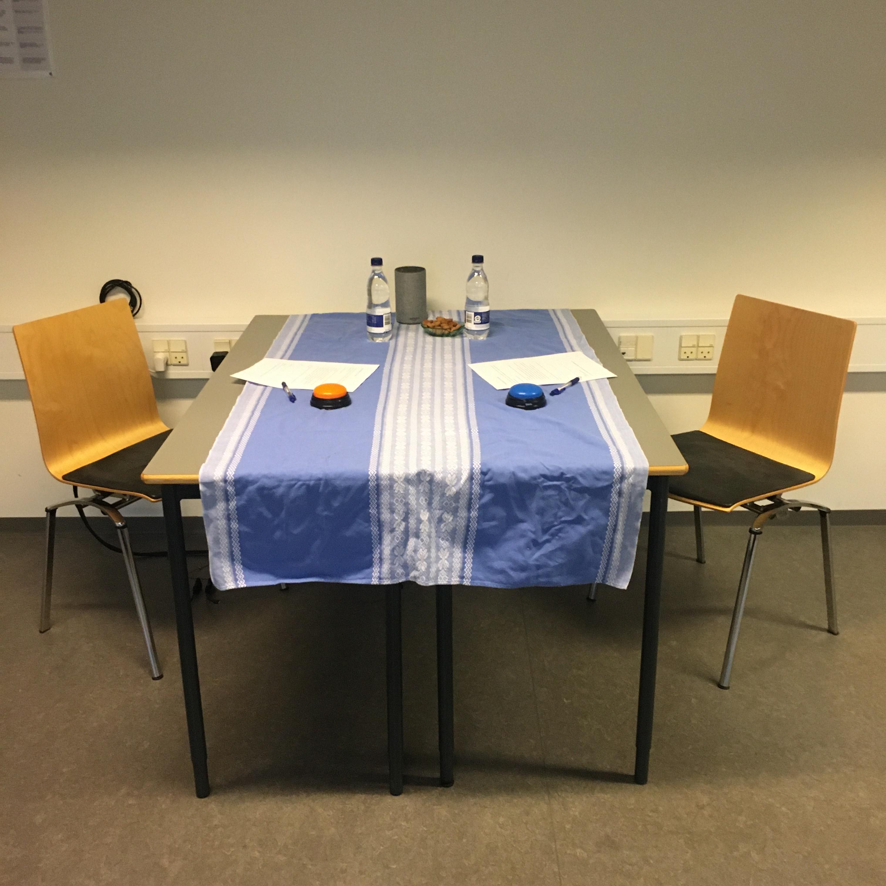
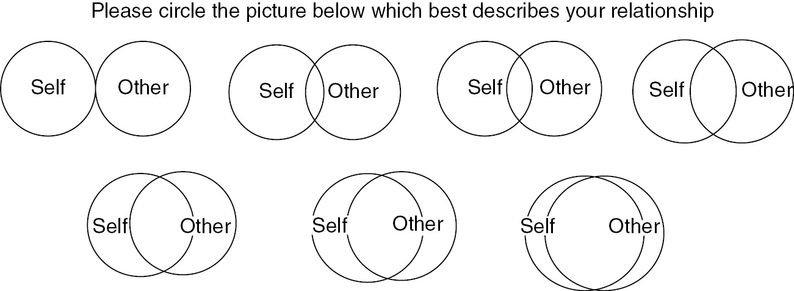
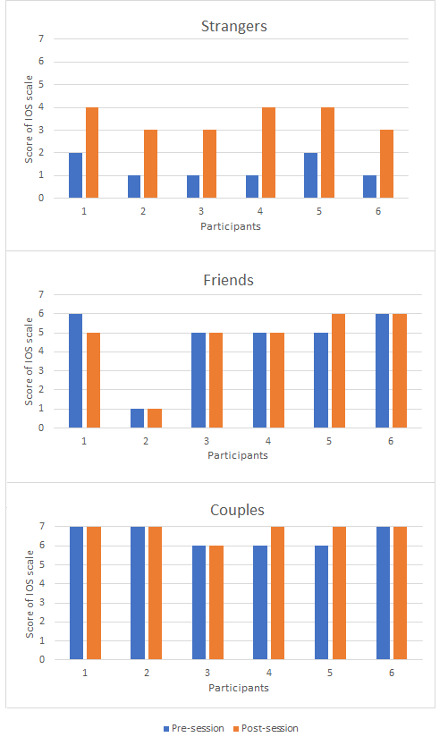
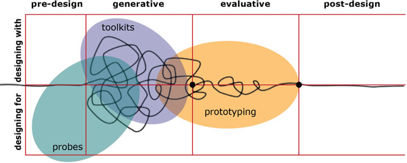
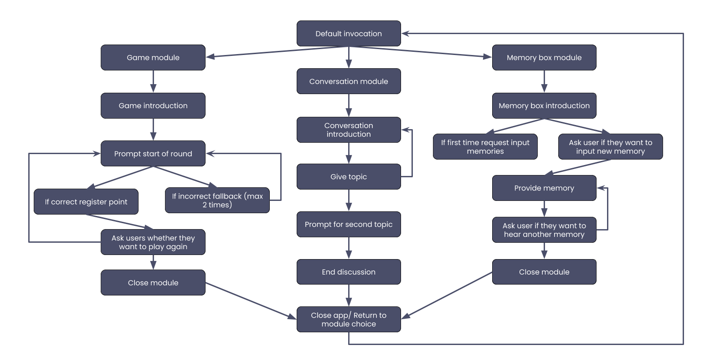
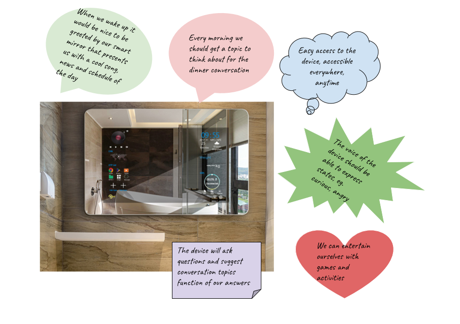
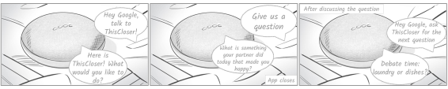

Focus
well-being, voice-user interfaces, participatory design, smart assistants, romantic relationships
Problem area
Technology has become a common thing to have in our lives, and lately it seems to
further separate us
rather than help us get closer, even though we are able to connect more easily with each other.
Well-being seems to be decreasing
as it can be seen from the high number of reports concerning our mental health.
Approach
Even though we have been able to communicate from the beginning of mankind,
with the introduction of technology we seem to have become increasingly unskilled in doing this.
This is the reasons why we took on this project and started looking at current information on this
topic. We found that self-disclosure
might be an appropriate tool to use in this situation and so we choose to combine this with technology:
voice-user interfaces.
Research
In the beginning of this study we had little experience and information regarding the design of
voice-user interfaces.
We therefore set on to expand our knowledge and find out more about how to utilize self-disclosure in
order to increase well-being in people.
The first steps we took were focused on creating an exploratory study environment. Here, we had 18
participants that helped us uncover valuable information.
The study was planned in a controlled environment, as for this phase, we wanted to filter out external
factors that might have influenced our results.

The participants came in pairs and interacted with each other by having a smart assistant facilitated
conversation.
During each session, two participants came into the room and interacted with each other by answering a
series of 25 questions posed by the device.

Before and after the activity they were asked to fill out an IOS scale which helped us measure whether
their perceived closeness would suffer any modifications.
The sessions were followed by semi-structured interviews to get the participants thoughts on the
interaction and create a complete image of the activity.
Findings
The findings showed that for groups that were formed out of strangers there was a greater increase in
closeness,
according to the results from the IOS scale. This scale however provided us with inconclusive results in
regards to the participants that
had a more intimate relationship, seeing as most pairs already checked the highest level in closeness
prior to the session.

However, these groups revealed during the interview that the session had a positive impact and it made
them
relieve memories and reflect on their relationship.
The results from this initial exploratory observation indicated that the smart assistant could prove to
be a good facilitator of interaction in face-to-face
interactions, but further research was needed.
Design
Following this exploratory stage, we moved to a more specific area of research.
This decision arose from previously gathered data. Smart devices are mostly present in homes, and as
several statistics showed couples were among the majority of the owners.
This information helped us find out the group that would benefit most from using this: romantic partners
living together.
During this phase we also stepped away from the user-centered approach that, followed in the previous stage, to participatory design seeing as we were moving the study into private homes and we wanted to create a relaxed environment. Now the participants also became our partners and through their participation they also accumulated knowledge and shared a sense of responsibility regarding the outcome. We divided the stage into two parts: deploying a smart assistant application for self-dislcosure into the participant's homes, and a digital design workshop.
At this moment we placed ourselves in a ”designing for users” phase where the aim was to provide the participants with knowledge on the capabilities of smart assistants and allow them to gather experiences that they would reflect upon in a later stage. The deployment period lasted one month because only a long-term study could uncover behavioural changes. During this period we carried out three interviews with each pair and maintened close contact with them throughout. We chose interviews as the main data gathering method as this was minimally intrusive compared to observations, seeing as we were already invading the participant’s private space.
During this phase we also stepped away from the user-centered approach that, followed in the previous stage, to participatory design seeing as we were moving the study into private homes and we wanted to create a relaxed environment. Now the participants also became our partners and through their participation they also accumulated knowledge and shared a sense of responsibility regarding the outcome. We divided the stage into two parts: deploying a smart assistant application for self-dislcosure into the participant's homes, and a digital design workshop.
At this moment we placed ourselves in a ”designing for users” phase where the aim was to provide the participants with knowledge on the capabilities of smart assistants and allow them to gather experiences that they would reflect upon in a later stage. The deployment period lasted one month because only a long-term study could uncover behavioural changes. During this period we carried out three interviews with each pair and maintened close contact with them throughout. We chose interviews as the main data gathering method as this was minimally intrusive compared to observations, seeing as we were already invading the participant’s private space.

We designed a technology probe, in the form of a smart device application, which was divided into three
modules, each with a different purpose,
and open enough so that the participants could use it how they saw fit.
The first module was created to facilitate conversation with the purpose of providing the participants with topics for conversation. This was similar to the way in which we developed the initial exploratory study, where it was revealed that this was a good way of enabling self-disclosure.
The second module took the form of a rudimentary game where the participants were encouraged to self-disclosure in a more lightweight manner. After the exploratory stage, where for some of the session we introduced game-like elements in the interaction, we decided we should further explore whether self-disclosure would be more effective when masked by activities in the form of entertainment.
The last module was intended as a memory board where participants could vocally register their thoughts and relieve them at a later time. The purpose behind this was to explore whether an uncommon method would encourage participants to self-disclose.
The first module was created to facilitate conversation with the purpose of providing the participants with topics for conversation. This was similar to the way in which we developed the initial exploratory study, where it was revealed that this was a good way of enabling self-disclosure.
The second module took the form of a rudimentary game where the participants were encouraged to self-disclosure in a more lightweight manner. After the exploratory stage, where for some of the session we introduced game-like elements in the interaction, we decided we should further explore whether self-disclosure would be more effective when masked by activities in the form of entertainment.
The last module was intended as a memory board where participants could vocally register their thoughts and relieve them at a later time. The purpose behind this was to explore whether an uncommon method would encourage participants to self-disclose.

After the deployment period we moved on to a “designing with users” phase by doing a digital
workshop with some of the pairs from
the study in order to uncover possible design directions. For this we used “Make-Tell-Enact” activities (Sanders,
2012) specific to participatory design.
The main outcome of the workshop consisted of a series of collages made by each pair encompassing their
vision for the design of an ideal voice-user interface for self-disclosure.

This marked the end of our collaboration with our participants and was followed by a thorough analysis of the gathered data in order to extract design guidelines.
Constraints
One of the main challenges we encountered became visible in the second part of the
study where, due to global restrictions regarding COVID-19, we were unable to meet with the participants.
We accommodated this by moving away from both face-to-face interviews and workshops, and planned the activities
in a digital environment.
On one hand this offered a more relaxed platform for carrying out the study, but on the other it created some difficulties for
some of the activities from the workshop.
We also encountered difficulties relating to our choice in platform, the Google Nest Mini.
The “command-response” interaction created some usability issues, but at the same type provided a clear
overview on what are the current
development possibilities with the technology at hand.
Outcome

From our results it was made evident that there is an expectation that smart devices should also respond to non-verbal cues.
The motivation behind using this type of technology should clearly be outlined or constructed through simpler goals, such as wining a
game.
What's more, in order to keep the users motivated and engaged,
such applications should make use of IoT environments to become seemlesly included in the
ecology of the home.